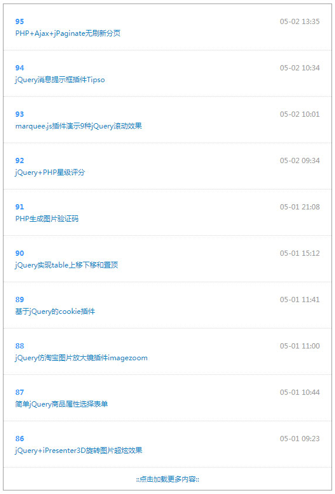

一款简单实用的PHP+Ajax点击加载更多列表数据实例，实现原理：通过“更多”按钮向服务端发送Ajax请求，PHP根据分页参数查询将最新的几条记录，数据以JSON形式返回，前台Query解析JSON数据，并将数据追加到列表页。其实也是Ajax分页效果。

html代码：
1 <div id="more">
2 <div class="single_item">
3 <div class="element_head">
4 <div class="date"></div>
5 <div class="author"></div>
6 </div>
7 <div class="content"></div>
8 </div>
9 <a href="javascript:;" class="get_more">::点击加载更多内容::</a>
10 </div>
引入jQuery插件和jquery.more.js加载更多插件：
1 <script type="text/javascript" src="jquery.js"></script>
2 <script type="text/javascript" src="jquery.more.js"></script>
3 $(function(){
4 $('#more').more({'address': 'data.php'})
5 });
data.php接收前台页面提交过来的两个参数，$_POST['last']即开始记录数，$_POST['amount']即单次显示记录数，看SQL语句就明白，其实就是分页中用到的语句。
1 require_once('connect.php');
2
3 $last = $_POST['last'];
4 $amount = $_POST['amount'];
5
6 $query = mysql_query("select * from article order by id desc limit $last,$amount");
7 while ($row = mysql_fetch_array($query)) {
8 $sayList[] = array(
9 'title' => "<a href='http://www.xxx.com/".$row['id'].".html' target='_blank'>".$row['title']."</a>",
10 'author' => $row['id'],
11 'date' => date('m-d H:i', $row['addtime'])
12 );
13 }
14 echo json_encode($sayList);
本文转自：https://www.sucaihuo.com/php/380.html 转载请注明出处！